投稿日: 2025/07/14 07:33:34
カテゴリ: グリースペンシル
サムネイル:
記事タイトルとサムネを何にしようかすごく迷った。以下の内容含めて、言葉にするといろいろ矛盾だらけなので、意図が正確に伝わるか自信がないのだけれど、たぶん放っておくと書く機会がなさそうなので、頑張って言葉にしてみる。
（【追記】まとめにもあるように、当記事の主旨はほぼSketch N'Carveの紹介記事、および、バグ？を乗り越えるための各種Tips。）
最近自分がやっている制作活動の目標は、あえて "雑に作る" というもの。
例えばの例として、以前よりたまに上げている（非3DCGの）、 3Dペン + グルーガン + ジョイント・フィラー・コンパウンドでの作例（過去に3GJ法と呼んでいたもの）を挙げる。
これらはもちろん途中過程なので、見た目も雑ではあるのだけれど、多くの造形作品がそうであるように、ここから研磨やフィラー、サーフェイサーなどを重ねていけば、クオリティ自体は上がっていく。
ただ、個人的に重視しているのが、「思いついたものを思いついたままに、そのままの熱量で作る」というもの。
正直、何かが走り出して、綿密に計画を練っていけば、想像したものというのはたいてい完成はする。そこで完成に至る作品は、もちろんいろんな選択肢から厳選したものになるのだけれど、どこか、それではもったいないなと思う自分がいる。
毎日しっかりしたもの、ちゃんとしたものを作るのも大事かもしれない。でも、なんとなく創りたいもの、普段なら失われていくはずのものを、形にするということは、大切な事柄が含まれているんじゃないかと思っている自分がいる。
ーー なんか書いててちょっと小難しくなったけど、結局のところ、粘土遊びのような楽しさをBlenderでもできないかというのが今回の試み。
言い換えるなら、ファスト・スカルプトの取り組みの一つといっても良いけれど、自分は別に速く作りたいわけではなくて、雑に作りたいだけ。
前項の最後でファスト・スカルプトという言葉を挙げたけれど、Sketch N'CarveもGrid Modelerも、ファスト・スカルプトの類（たぐ）いのBlenderアドオンだと思う。
ちなみにどちらも有料で、安いといえば安いかもだけど、そこそこの値段がするので、コスト的にはあまり万人に勧められるものではないかもしれない。
Blenderだけだとどうしてもいわゆる普通のポリゴンモデリングにおける高速造形は可能なものの、それらはどうしても、いわゆるローポリ・モデリングや、サブサーフェス・モデリングと相性が良いものだけに限られていく。これらのアドオンが可能にしてくれるのは、そうしたポリゴンの制約を超えた、自分たちが紙の上なら普通はラフにやっているような制作過程を可能にしてくれるものたち。
Grid Modelerは、グリッドという制約をつけることでそれを可能にする。それはまるで、方眼紙のようなものだと思ってもいいかもしれない。
Sketch N'Carveは、グリースペンシルという機能を活用することで、手描きのようなテイストを可能にする。
Grid Modelerについては既に多くの解説記事が存在しており、あえて自分が何かを語るまでもないので、今回はSketch N'Carveに絞って解説をしていく。
（※ ここからは急に技術的なTips記事にシフトするので注意。アドオンの詳細にまで興味のない方は次の章（「スカルプトのトリム (Lasso Trim) との違い」）まで飛ばしていただければ。）
Sketch N'Carveをまともに使おうとすると、いくつかのハードルに差し掛かる。
まず、Sketch N'Carveの公式ドキュメントで解説されているのは、執筆時点（2025年7月時点）では、古いUIになっている。どうやら、開発過程でアドオンの機能が進化していったようで、発表時点のUIとは齟齬が出ているようだ。
Sketch N'Carveは、とりあえず「K」キーを押せば発動するのだけれど、何もないところでKを押すとオブジェクトの新規作成（【追記】新規作成するにはさらに、UIからBlank STARTを選択しなければいけない）、既にオブジェクトが選択された状態でKを押すと、既存のオブジェクトに対する操作が可能になる。
例えば、Blenderの初期状態、キューブが存在していて選択されている状態で、「K」を押すと、以下のようになるのだけれど、この時点で既に罠がいくつもある。
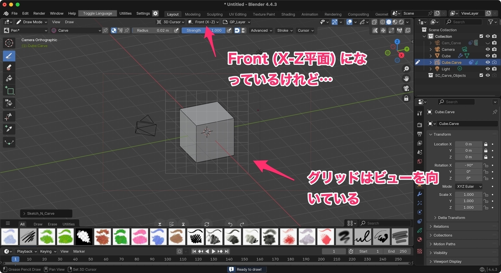
執筆時点でBlender 4.4を利用しているが、それ以前のバージョンでもおそらくこうなるはず。
理由はよくわかっていないものの、このアドオンが認識するグリースペンシルのキャンバス平面と、実際にグリースペンシルに指定されている平面設定に、齟齬が起きてしまっているようだ。1
これは明らかにバグなので今後直ったらいいなとはおもいつつ、とりあえず、グリースペンシルの設定をViewに変えるか、あるいはカメラをX-Z平面に設定するか、どちらかを選ぶことになる。
ただ、この齟齬のせいで、特にExtrude（押し出し）で造形されるものは、おかしなことになることが多い。これは、描いた平面と、アドオンが認識している法線方向が異なっていることに由来する。これについては、このあと順を追って説明していきたい。
Sketch N'Carveは、先ほど説明したように「K」キーを押すことで発動する。
「K」キーを押して自由に何かをまず描く。
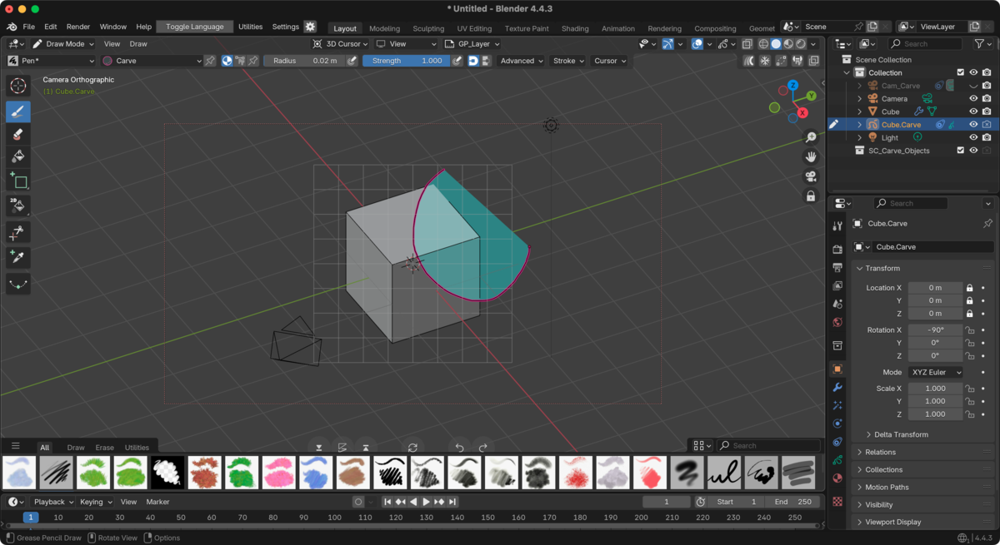
そして描き終わったら、もう一度「K」キーを押して、実体化させる。
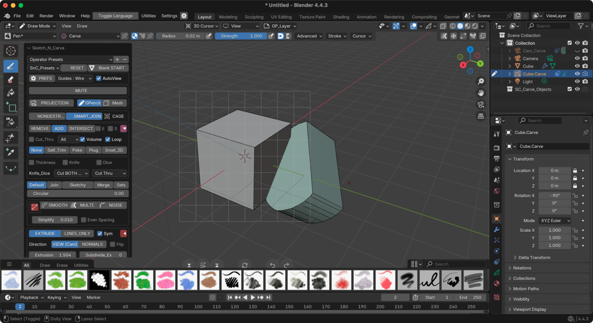
この時点でちょっと感動するのだけれど、左下に隠れている「Sketch_N_Carve」のメニューを広げると、いろいろ選べる。スクリーンショットはフルバージョンのものなので、廉価版のコアバージョンではもう少し表示されているメニューは少ないかもしれない。
このときおさえておくべきポイントがいくつかある。
まずは非破壊か否か。
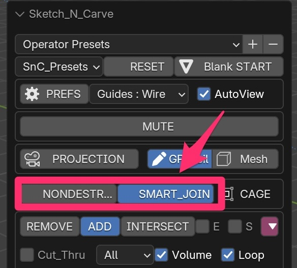
これが個人的には結構重要で、NONDESTRUCTIVE（非破壊）を選択しておくと、描いたオブジェクトに相当するオブジェクトを、後から通常のBlenderの機能でいじれるようになる。
自分がよく陥るのが、Extrude（押し出し）で造形しようとしたときに、思ってた位置（特に書き始めの平面位置）とズレているのを修正したいときが多い。非破壊であればあくまで通常のBlenderオブジェクトになっているので、Booleanモディファイアがかかっている元のオブジェクトを編集して、あとから自由にモディファイアを適用するなどの柔軟な操作が可能になる。
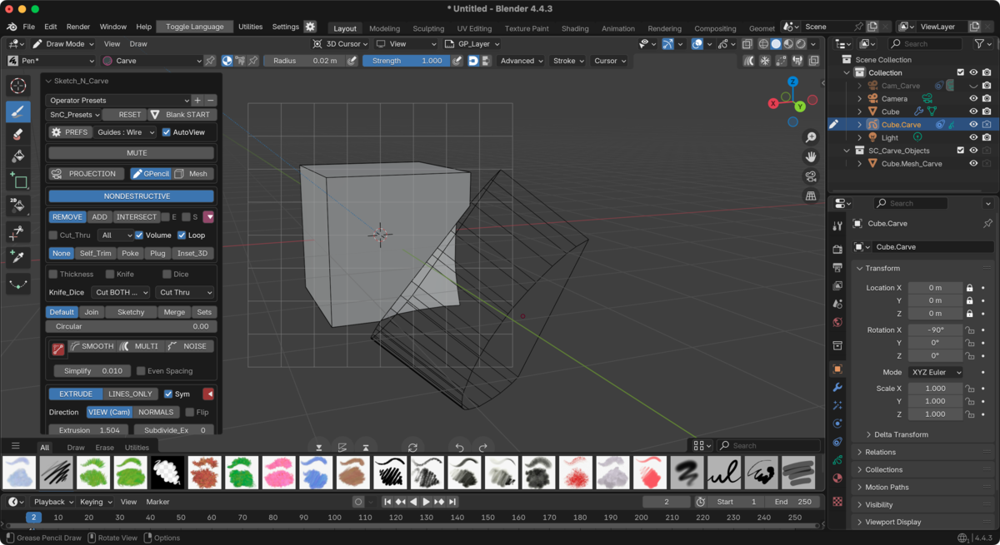
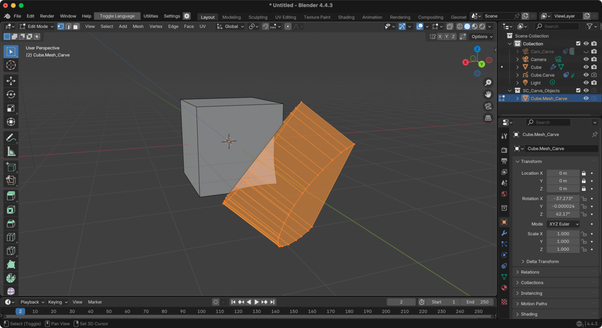
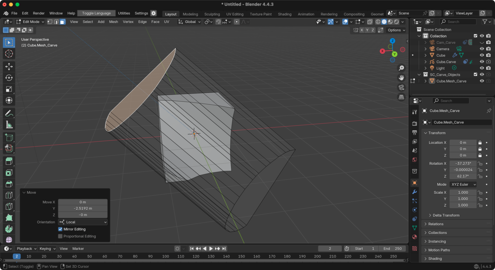
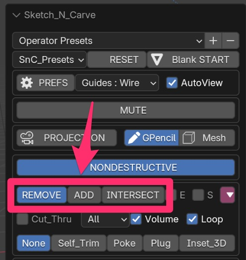
前述のNONDESTRUCTIVEなどのすぐ下にある項目。
先のスクリーンショットでは実はREMOVEを利用していたのだけれど、ブーリアン・モディファイアでの差分・合成・交差をここで選択できる。
もちろんNONDESTRUCTIVE（非破壊）を選んでおけば、あとから自分でモディファイアをいじることだってできるのだけれど、アドオン側がオブジェクトの表示をわかりやすくしたりする独自の機能を持っているので、ここで適切に選んでいないと後から大変なことが多い。
ちなみにTipsとして、ここでREMOVEを選んで作られた透明表示のオブジェクトを、後から気分が変わって実体化して利用したいことが多々あるのだけれど、正直アドオンが特殊な操作をするためにうまくいじれないことが多いので、そんなときは別オブジェクトを作って、EDITモード（編集モード）の頂点をいわゆるコピペのようにしてもっていくとうまくいく。（操作方法は割愛。）
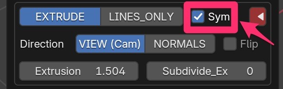
これが今回のなかで最も曲者（くせもの）で、最も思い通りにいかないものの一つ。
初めに解説したように、Sketch N'Carveにはバグがあって、グリースペンシルで描いた平面と、アドオン側で認識されている平面がズレてしまう。これによって最も弊害を受けるのが、このシンメトリ機能で、シンメトリをオンにすると、ズレた平面の影響を如実に受ける。
個人的にはこのシンメトリ機能が正しく動作したなら、非常に優れたアドオンのはずなのにと思うのだけれど、仕方がないのでオフにして利用する。
トレードオフとして、グリースペンシルで描いた平面から両方向への押し出しが不可能なので、先に説明したように、非破壊編集にしておいて、自分でオブジェクトをEDITモード（編集モード）で編集する。
さて、Sketch N'Carveのバグのために、回避するためのTipsを交えてしまったので主旨が伝わりづらくなってしまった感が否めないのだけれど、少し本筋に戻って、ファストスカルプトツールとしての概観を改めてみていきたい。
ここまで読んだ方は、Blenderが元々もっているスカルプト機能における、トリム (Lasso Trim)を使えば同等のことができると気付いた人もいるかもしれない。トリムでは、正負の切り替え（トリムモード: 差分 / 合成 の切り替え）もできるので、いわゆるトリミングだけでなく、自由なオブジェクトの追加も実はできる。正直、有償アドオンを使わなくてもこれで概ねのことはできるし、場合によってはこちらのほうが気軽で速い。
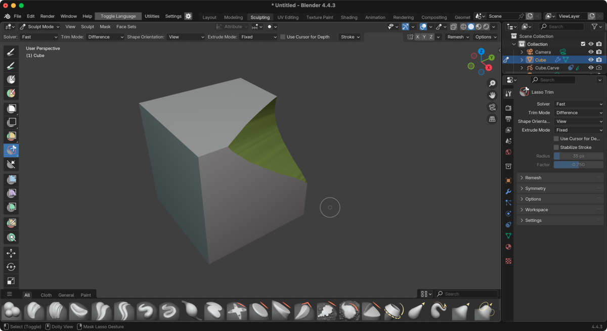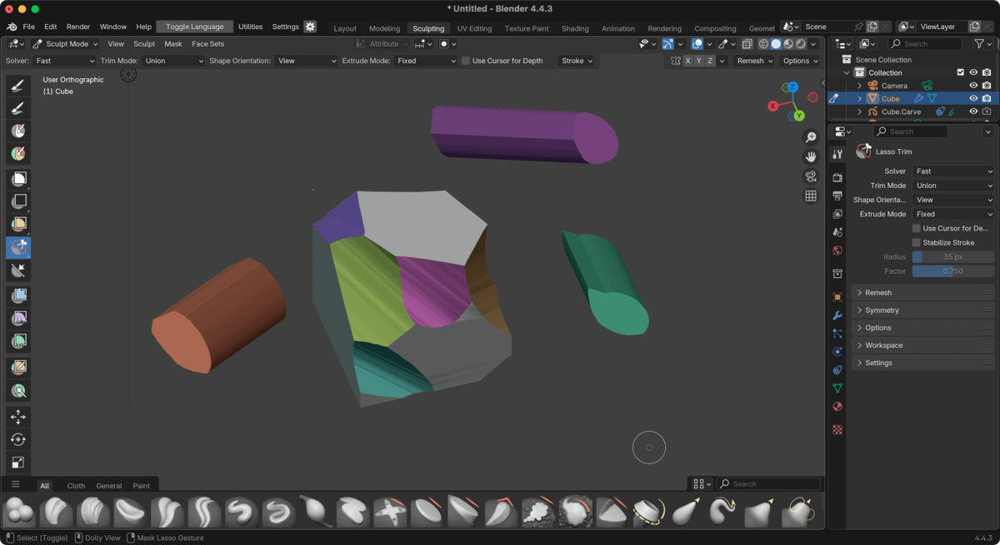
しかしこのスカルプトのトリム機能、思い通りのポリゴンを生成してくれないことが多い。トリムしたあとにポリゴンが滅茶苦茶になってしまって二進も三進も（にっちもさっちも）いかない状態を経験された方は多いのではないかと思う。メッシュ修正系のアドオンと組み合わせていけば、修正できることもあるのだけれど、自分は結構どうしようもなくなってしまって詰まることがある（そういうときはNomad Sculptに無理矢理もっていって治したり、ポリゴンを手でダイナミックに修正することもあるけど…）。
Sketch N'Carveでも、もちろんあまりに複雑な線を引けば同様のことは起こるのだけれど、基本的にはBlender本来のブーリアン機能が利用されているのもあってか、あるいはグリースペンシルの頂点数が適度に少ないためか 2、そこまで破綻せず、断面も比較的綺麗なことが多いのはありがたい。もちろんブーリアンでも破綻しておかしくなることは多々あるので、両者をうまいこと組み合わせていくといいと思う。
（書いていて気付いたけど、もしかするとこのスカルプトのトリムモード 差分 / 合成の切り替えをうまく使って、初めから差分を使って破壊的にするのではなくて、初めは合成 (Union) にして新規オブジェクトを作って、ブーリアン・モディファイアを使って非破壊的にやれば、Sketch N'Carveの非破壊と同等のことができて、やり方によってはメッシュもある程度操作できる気がする。手間は多いけど、これを簡潔に行うためにブーリアン系の無償アドオンを組み合わせていくのはアリかもしれない。）
さて、毎回のように書いているのだけれど、今回のようなファスト・スカルプト的なアドオンを利用すると、 ふつう、メッシュのトポロジーがだんだんとおかしくなっていく。
そういうときにZBrushなどで使われる機能がリトポロジーや自動トポロジー（AUTOPO）で、Blenderにももちろん当該の機能はあるものの、あまり賢くない（生成されるトポロジーがあんまり綺麗じゃない）ので、自分はいつもQuad Remesherを使う。
リトポロジーすれば、例えばそのあとにスカルプトでスムージングするなども容易にできるようになる。DynTopoなどでも同様の効果は得られるので、うまく使い分けると良い。
あんまり書くと何かの回し者みたいになってしまう気がするのだけれど、Blenderの標準機能でベベルをつけると、Sketch N'CarveやGrid Modelerのようなラフなエッジを持つパスにうまくベベルをつけることができなくて、破綻してしまう。こういうときは、Grid Modelerの作者でもあるKushiroさん（ちなみに名前は日本人っぽいけどどうやら日本人ではないみたい）が作られた各種便利ツールを検討すると良い。
ちなみにSoft Bevel（Kushiro Toolsに含まれている）は無償で、Hard Bevelは有償。
以前も紹介したことがある、Offset Cutなんかも便利（無償アドオン）。
あまり書きすぎると情報量が多すぎるのでよくないかなと思ったのだけれど、Sketch N'Carveは情報が少ないので、最後に一つだけ書いておきたいのがグリースペンシル・マテリアルについて。
Sketch N'Carveで「K」を押したあと書けるペンについて、普段のグリースペンシルとちょっと一風変わった見た目であることには、利用しているとすぐ気付く。
ここで使われているグリースペンシル・マテリアルは、かなり複雑な種類が存在していて、CarveやSketchなど、相応の名前が実はそれぞれついている。
これら一つ一つを解説していると大変な分量になってしまうので今回は割愛したいのだけれど、これらの各マテリアルのStrokeとFillをうまく使い分けると、本当にいろんなことができる。
Sketch N'Carveのチュートリアル動画では、よく見るとこのグリースペンシル・マテリアルを複雑に使い分けていて、よく観察するとマテリアルごとに色が違う。自分はこれに気付くのに結構時間がかかって、特にSketchという名のラフスケッチ用のマテリアルをうまく使い分けることに最初気付かなかったので、StrokeとFillの混在に悩んでいる人がもしいたら、気を付けて使っていくといいのかなと思う。
さて、Tipsがちょこちょこ横入りしたために、だいぶ主旨がブレブレな記事になってしまった感があるのだけれど、 結果的には主にSketch N'Carveの解説記事になった。
Sketch N'Carve、まだまだバグ？も多く、UIと公式ドキュメントの齟齬も多いのだけれど、うまく使うと強力なファスト・スカルプト・ツールになるのではないかと思う。（なお、記事中で解説の通り、このアドオンなしでスカルプトツールのLasso Trimでも概ね似たようなことはできる。）
今回は解説しなかったけれど、Grid Modelerも本当に素晴らしいアドオンの一つ。
初めの方にも書いたのだけれど、自分はファスト・スカルプトというのは、速く作るためのものばかりではなくて、ラフスケッチをそのまま形にするためのものとしてとても有用だと思っているので、今後もうまく付き合っていきたいなと思う。（Nomad Sculptなどとうまく行き来しつつ使っていきたい。）
ちなみに、初めからNomad Sculptなどを使わずにBlenderでファスト・スカルプトをする意義はなんだろうと考えると、正直好みの部分は大きくあるのだけれど、従来のポリゴン・モデリングのノウハウを活用できるのは大きいのではないかと思う（ZBrushでいうところの、ZModeler等に相当）。他のツールと行き来すると、結局最終的にBlenderなどに戻って来ることも多いのだけれど、最初に何も考えずBlenderを起動すればいいように持っていけるのは、個人的には精神衛生上とてもありがたい。